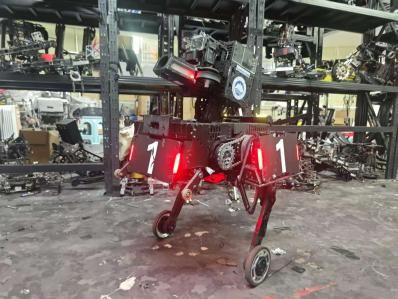
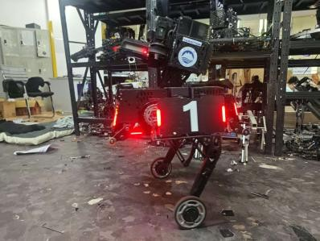
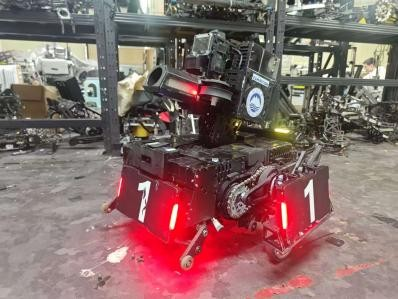

Wheel-legged robots and embedded MPC
2023–present
I have worked on the control and embedded software of T-DT’s omnidirectional infantry, serial-leg infantry, and serial-leg hero robots. For the wheel-legged platforms, I developed balance controllers and leg-length-dependent models, and implemented an ADMM-based MPC solver on STM32H7, following TinyMPC.



Implementation notes
The deployed controller uses a prediction horizon of 8, with 10 states and 4 control inputs. On a 550 MHz STM32H7, one solve takes no more than 4 ms. The model uses CAD mass and inertia parameters; state-space matrices and solver caches are fitted offline across leg lengths, then updated online. This controller has been deployed on our 2026 serial-leg hero robot.
The repository also includes a five-DoF generalized momentum observer, collision-detection logic, and symbolic M/C/G derivation. It contains only these modules, not the full robot firmware. The numerical model and observer have known limitations; a residual crossing a threshold does not by itself confirm a collision. See the repository README for the test scope and caveats.